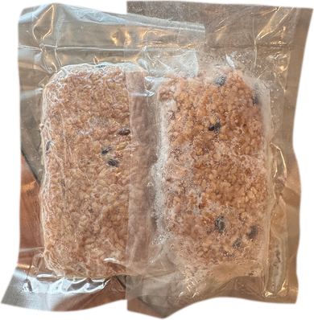
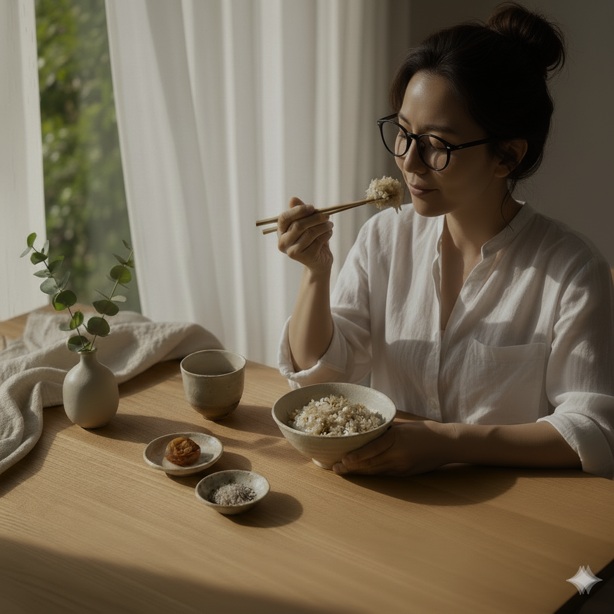

京子さんから酵素玄米の炊き方を学び、
全国へ届ける「製造元」になりませんか？
U-wordのパートナー様から寄せられた「代理店・特約店として販売するだけでなく、美味しい酵素玄米を自分で製造して届ける側としても関わりたい」というお声から生まれた新しいパートナーシップ構想です。
「玄米クレンズ製造元認定講師」である京子さんから本格的な酵素玄米の炊き方を学び、専用スターターセット（真空パック機・食品ラベル機・許可手続きマニュアル一式）を備えて、ご注文に応じてお客様へ発送する「製造元パートナー」を募集します。



玄米クレンズ 3つの関わり方
ご自身のライフスタイル、お持ちのスキルや拠点（サロン・飲食店・キッチン工房・ご自宅）に合わせて、3つのステップ・役割から最適な関わり方をお選びいただけます。
販売する人〈代理店・特約店〉
サロン・整体院・パーソナルジム・オンライン相談などを通じて、お客様に玄米クレンズをご案内・販売するパートナーです。
- 定価32,500円 ／ 特約店卸22,750円（粗利9,750円）
- 最小5セットから低リスクで導入可能
- 鍼灸師・原麻優子による初回体験フォロー＆LINE文面集完備
製造する人〈製造元パートナー〉
認定講師・京子さんから酵素玄米の炊き方を学び、玄米クレンズ用の酵素玄米パックを製造し、注文に応じてお客様へ発送する製造パートナーです。
- 京子さんの「製造元認定講座」で美味しい炊き方を習得
- 真空パック機・食品ラベル機・許可マニュアルのスターターセット導入
- 注文に応じてご自身の製造拠点からお客様へ発送し製造報酬を獲得
玄米クレンズを体験する人
まずはご自身の体調管理や腸活・デトックスとして、3日間・8日間・16日間の玄米クレンズプログラムを体験する愛用者様です。
- 酵素玄米14食＋甘酒・めぐみ茶・ごま・塩・お灸の7点セット
- 我慢しない「食べて整える」クレンズ体験
- 体験後に「販売店」や「製造元」へステップアップも可能
京子さんから学ぶ「玄米クレンズ製造元認定講師」制度
現在のお教室の取り組みにプラスする形で、京子さんに「玄米クレンズ製造元認定講師」としてご活躍いただき、全国の製造元パートナーを育てていただく構想です。
「美味しい酵素玄米を炊ける技術」が、
そのまま一生モノの仕事・発送拠点になる。
「お教室で習った酵素玄米が本当に美味しくて、家族だけでなく多くの方に届けたい」「U-wordの仲間と一緒に、つくる側としても貢献したい」——そんな方を、京子さんの認定講座で公式な製造元パートナーへと育成します。
受講生が製造元になるための「製造元スターターセット」をご購入いただいた際、その代金の一部を京子さんへ「ご紹介料（認定・育成フィー）」としてお支払いする仕組みとすることで、お教室の新たな収益柱にもなります。

京子さんのお教室で習得
「玄米クレンズ製造元認定講師」の京子さんから、酵素玄米の浸水・炊飯・天地返し・熟成の極意を学びます。
スターターセット導入＆許可確認
真空パック機・食品ラベル機・衛生＆許可確認マニュアルのセットを導入し、製造場所の届出・基準を整えます。
玄米クレンズ製品の製造・包装
統一品質規格に基づき酵素玄米を炊き上げ、1食ずつ真空パック＆食品表示ラベルを貼付して製品化します。
注文に応じてお客様へ発送
本部・特約店から入ったご注文に応じてお客様へ発送。製造数に応じた製造報酬を受け取れます。
製造元スターターセット（構想パッケージ）
「何から機材を揃えればいいかわからない」「保健所の手続きやラベル表示が不安」という方でも迷わずスタートできるよう、必要な機材・資材・手続きマニュアルをひとつにまとめた専用セットを構想しています。
① 真空パック機 ＆ 包装用の専用袋
炊き立て・熟成後の酵素玄米の水分量ともっちり感を逃さず、衛生的に密封できる真空パック機と、冷凍・湯煎・レンジ加熱に適した専用規格の包装袋セットです。
・卓上型・準業務用 真空包装機 本体
・玄米クレンズ1食分（規定グラム数）専用パック袋
・脱気・シール時間の設定手順シート
② 食品ラベル機 ＆ ラベル用紙
食品表示法に基づいた「名称・原材料名・内容量・賞味期限・保存方法・製造者（製造所所在地・氏名）」を、ワンタッチで美しく印字できるラベルプリンターと専用ラベル用紙です。
・食品表示ラベルプリンター本体
・耐水・耐冷仕様の専用ラベルロール用紙
・玄米クレンズ統一ラベルテンプレートデータ
③ 食品衛生資格・製造許可の手続きマニュアル
食品を製造・販売する上で必須となる「食品衛生責任者」の資格確認や、製造場所（ご自宅工房・飲食店キッチン等）で必要な保健所の許可・届出を確認・申請するための実践マニュアルです。
・食品衛生責任者 資格取得・確認ガイド
・管轄保健所への事前相談チェックシート（営業許可・届出区分）
・製造ロット管理・衛生管理（HACCP準拠）記録フォーマット
安心・安全な全国発送に向けて、以下の基準・手続きを順次整備しています
どなたが製造しても「京子さん直伝の変わらぬ美味しさ」と「食品としての確かな安全性・法令遵守」を両立するため、正式リリースに向けて現在以下の3項目を整備・策定中です。
「製造元パートナー」「認定講座」に
ご関心のある方・先行案内をご希望の方へ
「京子さんから酵素玄米の炊き方を学んで製造元になりたい」「自分のキッチンやお店で製造できるか知りたい」「まずは販売パートナー（特約店）や1セット体験から始めたい」など、公式LINEよりお気軽に先行相談・お問い合わせください。
 公式LINE 先行相談窓口
①販売する人 ／ ②製造する人 ／ ③体験する人
公式LINE 先行相談窓口
①販売する人 ／ ②製造する人 ／ ③体験する人ご希望の関わり方をメッセージでお知らせください